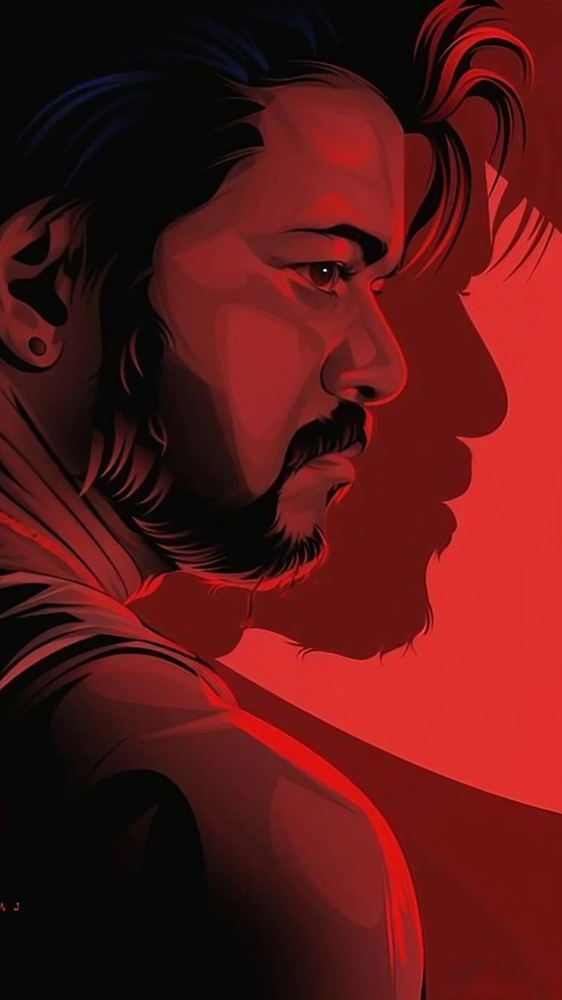

style="background-color: lightgrey;" >
LEO
ONCE UPON A TIME THERE LIVED A BEAST
LEO LEO LEO

Chapter 1: The Quiet Life
Parthiban "Parthi" led a peaceful life in Theog, Himachal Pradesh, juggling between his role as an animal rescuer ,and running a quaint café. His world revolved around his wife, Sathya, and their two children, Siddharth "Siddhu" and Mathi "Chintu." The family's bond was as strong as the serene mountains surrounding their home.
Chapter 2: The Call of the Wild
Joshy Andrews, a forest ranger and Parthi's friend, called for help in taming a spotted hyena threatening the town. With Siddhu's aid, Parthi tranquilized and
adopted the hyena, choosing to keep the incident quiet.
Chapter 3: The Night Everything Changed
It was a quiet night in Theog, and Parthiban "Parthi" was at his cozy café with his daughter, Mathi "Chintu." Little did they know that this ordinary night would soon transform into a chaotic ordeal that would leave an indelible mark on their lives.
The peaceful ambiance of the café was shattered when Shanmugham, a notorious robber, along with his menacing gang, stormed in with malicious intent. Parthi, known for his role as an animal rescuer and the serene café he owned, found himself facing an unexpected and menacing adversary.
As Shanmugham and his gang demanded more than just money, tensions escalated. Parthi, in an attempt to defuse the situation, offered them money, hoping they would leave without further trouble. However, the atmosphere grew increasingly hostile when one of the gang members made a move on Shruthi, Parthi's employee.
Rage surged within Parthi as he witnessed the threatening situation unfolding before him. A man known for his compassion towards animals found himself at a crossroads, torn between his peaceful nature and the instinct to protect his loved ones. In a moment of sheer desperation, when Chintu's life hung in the balance, Parthi's calm demeanor gave way to a fierce determination to safeguard his family.
Fists flew, and the café became a battleground. Parthi, propelled by a surge of adrenaline and a fierce need to protect, engaged in a physical confrontation with the gang members. The once-tranquil establishment became a chaotic arena, echoing with the sounds of struggle and desperation.
The turning point came when, cornered and facing a dire threat to Chintu, Parthi took a drastic step. In a move driven by pure instinct and an unwavering commitment to his family's safety, he wielded a gun. The shots echoed through the night, leaving a chilling aftermath of still bodies in the once vibrant café. The immediate threat was neutralized, but the cost was high. Parthi, who had just become an unwitting participant in a violent confrontation, now grappled with the aftermath of his actions.
The consequences were swift – Parthi found himself in police custody. The authorities, faced with a complex situation, initially questioned the circumstances surrounding the violent incident. Parthi, however, maintained that he had acted in self-defense, attempting to shield his family from harm. The legal process unfolded, and eventually, Parthi was released, the claim of self-defense serving as a shield against the accusations of murder.
However, the aftermath was not confined to the local precinct. The incident, with Parthi's photograph splashed across newspapers, grabbed national attention. The story of a seemingly ordinary man resorting to extreme measures to protect his family resonated with people across the country, turning Parthi into an unwitting symbol of defiance against threats.
In the midst of this newfound notoriety, the narrative took an unexpected turn. The image of Parthi reached the eyes of Harold Das, a notorious gangster operating in Telangana. The repercussions of this seemingly chance encounter would reverberate through Parthi's life, intertwining his fate with that of a criminal underworld he had never anticipated.
Chapter 4: The Shadows of the Past
The chaotic events that unfolded at the café drew the attention of not only the local authorities and national media but also a figure from Parthi's past, one he had hoped to leave behind. Shanmugham's relatives, seeking vengeance for the havoc wreaked upon their kin, intensified the turmoil surrounding Parthi and his family.
Faced with the looming threat of retaliation, Parthi realized the need for additional protection. In a plea for security, he reached out to the authorities, requesting a high-ranking police officer to be stationed at his home. The response to this plea arrived in the form of Napoleon, a seasoned officer who, due to recent heroic exploits in Tiruchirappalli, had earned a promotion.
However, the situation grew even more complex with the arrival of Antony Das, a figure claiming a familial connection that Parthi vehemently denied. Antony asserted that Parthi was, in fact, his long-presumed-dead son, Leo Das. This revelation thrust Parthi into a conflict not only with the criminal underworld but with a past he had sought to escape.
Antony's threats and insistence on Leo's identity set the stage for a tumultuous confrontation. Parthi, who had become accustomed to a life centered around his family and animal rescues, now found himself entangled in a web of family secrets and criminal legacy. The peaceful mountains of Theog concealed a history steeped in shadows, one that would gradually unravel, revealing a narrative of crime, tragedy, and revenge.
As Joshy and Sathya, driven by the need to unravel the truth, delved into Leo's past, they stumbled upon a more profound and tangled story. Leo's connection with Hridayaraj D'Souza, an incarcerated friend with ties to the criminal underworld, hinted at a history far more intricate than anyone had anticipated.
Chapter 5: The Web of Crime
The year 1999 marked a turning point in the Das family's history. Antony, seemingly a tobacco tycoon, had established a facade, concealing darker dealings beneath the surface. The collaboration with Harold, a notorious gangster, and the involvement of Antony's own children, Leo and Elisa, painted a picture of a family deeply enmeshed in criminal activities.
The Das & Co. tobacco factory, initially thought to be a legitimate business, served as a front for the clandestine operations orchestrated by Antony and Harold. Leo and Elisa, coerced into participating in the illicit trade, became unwitting pawns in a dangerous game.
Tragedy struck when Antony, driven by a twisted belief in the occult, sought to sacrifice Elisa for the sake of the family's criminal ventures. Leo, enraged by this heinous act, retaliated by setting fire to Harold's drug supply, intending to disrupt their nefarious activities. However, the consequences were dire – Elisa lost her life, and Antony, believing Leo to be dead, dealt a fatal blow to his own son.
As the pieces of Leo's tumultuous past fell into place, Joshy and Sathya uncovered a narrative of familial betrayal, criminal enterprise, and tragic sacrifice. Leo, once thought to be a casualty of his family's criminal legacy, had risen from the ashes to forge a new identity in the peaceful hills of Theog.
As Antony kidnapped Siddhu, Parthi's son, the past and present collided in a climactic confrontation. The pursuit of justice, tangled family dynamics, and the specter of revenge converged in a narrative that transcended the tranquility of Theog.
Chapter 6: The Final Showdown
The tumultuous events reached a critical juncture as Harold, now aware of Antony's demise, initiated a tense negotiation with Parthi. The demand: Parthi must deliver Antony's body in exchange for Siddhu's safety. The stakes were high, and Parthi, reluctantly complying, found himself ensnared in a dangerous game orchestrated by the remnants of the Das criminal empire.
Harold's lair, a hub of criminal activities, became the battleground for a final showdown. The shadows of the past cast long, and the air crackled with tension as Par